Part 4
Local Search
梯度下降
Framwork
-
Local
- 定义一个邻居
- A local optimum is a best solution in a neighborhood
-
Search
- Start with a feasible solution and search a better one within the neighborhood
- A local optimum is achieved if no improvement is possible
如何得到邻居：
- S~S': S' 是一个邻居，由 S 经过小小改动得到
- N(S): S 的邻居 - S' 组成的集合
算法：
SolutionType Gradient_descent()
{ Start from a feasible solution S FS ;
MinCost = cost(S);
while (1) {
S’ = Search( N(S) ); /* find the best S’ in N(S) */
CurrentCost = cost(S’);
if ( CurrentCost < MinCost ) {
MinCost = CurrentCost; S = S’;
}
else break;
}
return S;
}
Vector Cover Problem
Given an undirected graph G = (V, E). Find a minimum subset S of V such that for each edge (u, v) in E, either u or v is in S.
分析：
- 可行解的集合：FS-所有顶点覆盖的方法
- 目标函数：cost(S)，顶点集合的大小
- 邻居：S 增加/减少一个顶点
- Search：Start from S = V; delete a node and check if S' is a vertex cover with a smaller cost.
一个点的相邻顶点数 < |V|，因此 N(S) 的大小 O(|V|)
这种方法容易不小心删掉关键的点，得到不好的结果
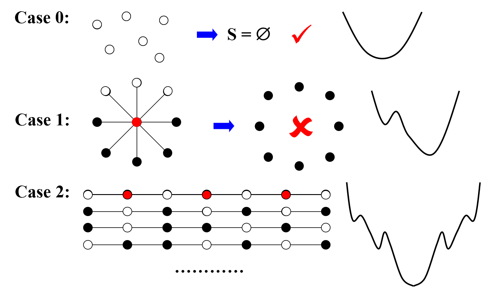
SolutionType Metropolis()
{ Define constants k and T;
Start from a feasible solution S in FS ;
MinCost = cost(S);
while (1) {
S’ = Randomly chosen from N(S);
CurrentCost = cost(S’);
if ( CurrentCost < MinCost ) {
MinCost = CurrentCost; S = S’;
}
else {
// 以一定的概率跳出当前解
With a probability e^{delta(cost)/kT}, let S = S’;
else break;
}
}
return S;
}
Hopfield Neural Networks
Graph G = (V, E) with integer edge weights w (positive or negative).
If \(w_e\) < 0, where e = (u, v), then u and v want to have the same state; if \(w_e\) > 0 then u and v want different states.
不一定有解，比如三角形三条正边
定义：
- 好边和坏边: In a configuration S, edge e = (u, v) is good if \(w_e s_u s_v < 0 (w_e < 0 iff s_u = s_v )\); otherwise, it is bad.
-
顶点的满足条件：In a configuration S, a node u is satisfied if the weight of incident good edges \(\geq\) weight of incident bad edges.
- 相邻点的权重（ \(w_e s_u s_v\)）和 <= 0
- A configuration is stable if all nodes are satisfied.
ConfigType State_flipping()
{
Start from an arbitrary configuration S;
while ( ! IsStable(S) ) {
u = GetUnsatisfied(S);
su = - su;
}
return S;
}
定理：一定有稳定解，最多翻 \(W = \sum_e|W_e|\)
Proof: Measure of proggress:
- 每翻转一个点，原先的好边变成坏边，坏边变成好边
- 又因为未满足的点的边权和>0，所以势能函数必增长
- 而势能函数必小于 W
因此最多翻 W 次
u 个翻转发生后：（此时 S 变成了 S'）
Maximum Cut Problem
: Given an undirected graph G = (V, E) with positive integer edge weights we, find a node partition (A, B) such that the total weight of edges crossing the cut is maximized.
每个顶点染色，希望顶点颜色不同的边的权重和最大
是 Hopfield Neural Networks 的 special case
目标函数转化成好边的边权和
应用
问题分析：
- 目标函数：最大化 w(A, B)
- 可行解：任何染色的方式
- 邻居：把一个点的颜色改变（翻转没有被满足的节点）
不能保证一定得到最优解
局部解有多好？
定理：得到的解不会小于最优解的 1/2
证明：算法结束后，对任何一个节点，好边权重和肯定大于坏边权重和，即 $$
$$
不一定在多项式时间内收敛：
- 如果目标函数的改变比 \(\frac {2\varepsilon}{|V|}W(A, B)\) 小，则退出
- \((2+\varepsilon)\)-approximation
Claim：在用了上面的方法后，最多翻转 \(O(n/\epsilo logW)\)（多项式时间复杂度）
-
找一个更好的邻居
- 选择范围变大（增大步长），邻居由 {v1, v2, v3} 变为 {(v1),(v1, v2)} - \(O(n^2)\);
Randomized Algorithms
随机的目的：
- 分析算法时，需要生成随机数据测试（世界随机）
-
算法决策时，有时需要随机（对抗 worst-case input）
-
不需要精确解的情况，随机算法能高效地算出可能性很高的解
- 选择算法起点
A Quick Review
- Pr[A] - 事件 A 发生的可能性
- E[X] - 数学期望
Example: The Hiring Problem
Hire an office assistant from headhunter
Interview a different applicant per day for N days
Interviewing Cost = \(C_i\) << Hiring Cost = \(C_h\)
Analyze interview & hiring cost instead of running time
计算雇佣的消耗：雇佣 M 个人，Total cost = \(O(NC_i+MC_h)\)
需要设计一个算法，能招募到最厉害的人，并且 Total cost 最小
int Hiring ( EventType C[ ], int N )
{ /* candidate 0 is a least-qualified dummy candidate */
int Best = 0;
int BestQ = the quality of candidate 0;
for ( i=1; i<=N; i++ ) {
Qi = interview( i ); /* Ci */
if ( Qi > BestQ ) {
BestQ = Qi;
Best = i;
hire( i ); /* Ch */
}
}
return Best;
}
- worst case 人按能力递增顺序面试，算法 cost 是 \(O(NC_h)\)
如果候选人按随机顺序出现，计算期望值：
- 随机性假设：当前面试的 i 个人中，任意一个个人是当前最好的面试者的可能性相同
- X = number of hires
- \(X_i\) = 第 i 个人是否被雇佣
- \(X=\sum_{i=1}^n{Xi}\)
- 由随机性假设，\(E(X_i)=1/i\)
- \(E(X)=\sum_{i=1}^n1/i=lnN+O(1)\)
因此，随机情况下，算法 cost 是 \(O(C_hlnN+NC_i)\)
int RandomizedHiring ( EventType C[ ], int N )
{ /* candidate 0 is a least-qualified dummy candidate */
int Best = 0;
int BestQ = the quality of candidate 0;
// 把面试者随机排序，再用上面的算法
randomly permute the list of candidates;
for ( i=1; i<=N; i++ ) {
Qi = interview( i ); /* Ci */
if ( Qi > BestQ ) {
BestQ = Qi;
Best = i;
hire( i ); /* Ch */
}
}
}
void PermuteBySorting ( ElemType A[ ], int N )
{
for ( i=1; i<=N; i++ )
A[i].P = 1 + rand()%(N3);
/* makes it more likely that all priorities are unique */
Sort A, using P as the sort keys;
}
- Claim: PermuteBySorting produces a uniform random permutation of the input, assuming all priorities are distinct.
如果只能雇佣一个人，策略如下：
int OnlineHiring ( EventType C[ ], int N, int k )
{
int Best = N;
int BestQ = - Inf ;
for ( i=1; i<=k; i++ ) {
Qi = interview( i );
if ( Qi > BestQ ) BestQ = Qi;
}
for ( i=k+1; i<=N; i++ ) {
Qi = interview( i );
if ( Qi > BestQ ) {
Best = i;
break;
}
}
return Best;
}
即忽略前面的 k 个人，不管表现如何都不雇佣，只记录最好的表现作为后面面试的参考。
- 参数 k 很重要
概率分析：
总之，雇佣到最好的人的可能性 \(Pr[S]\geq\frac{k}{N}ln\frac{N}{k}\)（求导算 k）
Example: Quicksort
average: \(O(NlogN)\)
worst: \(O(N)^2\)
为了防止最坏情况发生，要选好 pivot
- 两个概念
- Central splitter - the pivot that divides the set so that each side contains at least n/4
- Modified Quicksort - always select a central splitter before recursions
分析：
- Type j:
Parallel Algorithms
Parallel Random Access Machine (PRAM)
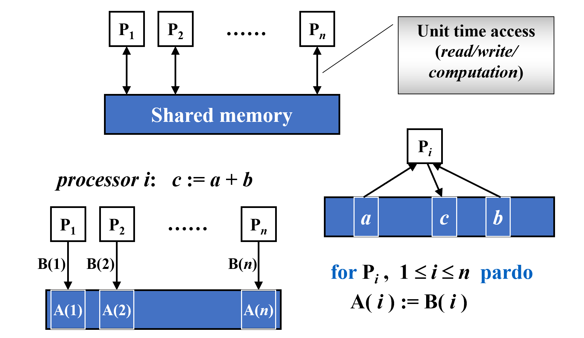
for Pi, 1<=i<=n pardo - 每个处理器同时进行操作
- 同时写入一个位置会产生冲突，解决方法：
- Exclusive-Read Exclusive-Write (EREW) - 不允许同时读写
- Concurrent-Read Exclusive-Write (CREW) - 允许同时读，不允许同时写
- Concurrent-Read Concurrent-Write (CRCW) - 当且仅当同时写的数据相同时，允许同时写（还有随机写和最优先写的规则）
- 第三种方法最常见
Example: The summation problem.
Input: A(1), A(2), …, A(n)
Output: A(1) + A(2) + … +A(n)
（一共有八个处理器）
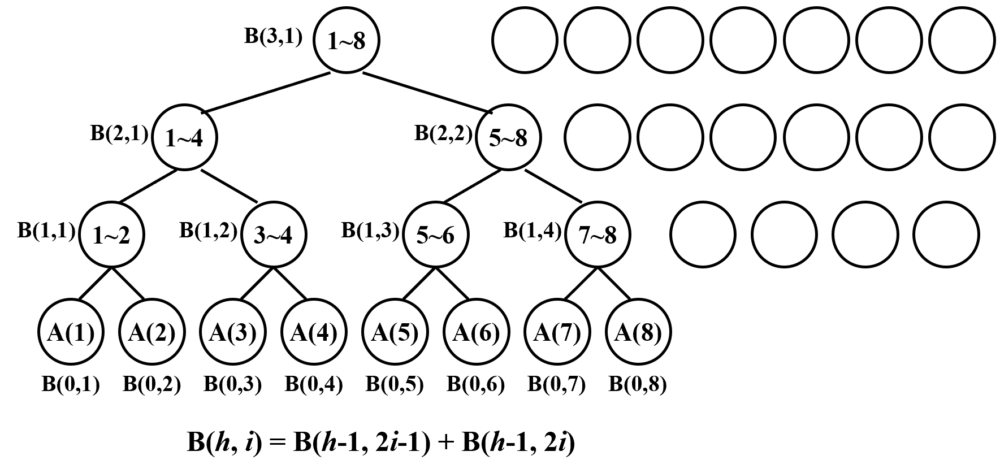
for Pi, 1<=i<=n pardo
B(0,i): = A(i)
for j = 1: log n begin
if i <= n/2^h
B(j,i): = B(j-1,2*i-1)+B(j-1,2*i)
else stay idle // PRAM 模型需要告诉处理器是进行操作还是 stay idle
end
for i = 1: output B(log n, 1); for i > 1: stay idle
可以看到上图中在后面的循环，后面的几个处理器都不进行操作
PRAM 的不足：每说明处理器数量不同时怎么做；必须知名具体操作有时过于复杂
Work-Depth (WD) Presentation
for Pi, 1 <= i <= n pardo
B(0, i) := A( i )
for h = 1 to log n
for Pi, 1 <= i <= n/2^h pardo
B(h, i) := B(h-1, 2i-1) + B(h-1, 2i)
for i = 1 pardo
output B(log n, 1)
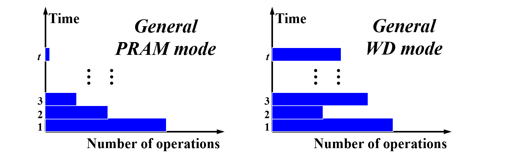
Measuring the performence
- Work load - total number of operation 工作量
- Worst-case running time: T(n) 工时
- 等价描述：
- W(n) operations and T(n) time
- P(n) = W(n)/T(n) processors and T(n) time (on a PRAM)
- W(n)/p time using any number of p ≤ W(n)/T(n) processors (on a PRAM)
- W(n)/p + T(n) time using any number of p processors (on a PRAM)
只对 PRAM 成立的原因是，PRAM 每个处理器的工作量是相同的（stay idle 也算作工作量），WD 不是。
分析上面提到的 WD 算法：
for Pi, 1 <= i <= n pardo
B(0, i) := A( i )
for h = 1 to log n
for Pi, 1 <= i <= n/2^h pardo
B(h, i) := B(h-1, 2i-1) + B(h-1, 2i)
for i = 1 pardo
output B(log n, 1)
- WD-presentation Sufficiency Theorem - WD 模式中的算法可以在 O(W(n)/P(n) + T(n)) 时间内由任何 P(n) 个处理器实现，使用与 WD 表示中相同的并发写入约定。
Example: Prefix-Sums.
Input: A(1), A(2), …, A(n)
Output: \(\sum_{i=1}^1A(i),\sum_{i=1}^2A(i),\sum_{i=1}^3A(i)...\)
Technique: Balanced Binary Trees
得到 C 的递推公式：
因此需要从下到上算一次 B，再从上到下算 C
for Pi , 1 <= i <= n pardo
B(0, i) := A(i)
for h = 1 to log n
for i , 1 <= i <= n/2h pardo
B(h, i) := B(h - 1, 2i - 1) + B(h - 1, 2i)
for h = log n to 0
for i even, 1 <= i <= n/2h pardo
C(h, i) := C(h + 1, i/2)
for i = 1 pardo
C(h, 1) := B(h, 1)
for i odd, 3 <= i <= n/2h pardo
C(h, i) := C(h + 1, (i - 1)/2) + B(h, i)
Example: Merging – merge two non-decreasing arrays A(1), A(2), …, A(n) and B(1), B(2), …, B(m) into another non-decreasing array C(1), C(2), …, C(n+m)
- RANK( j, A) = Bj 在 A 数组中比多少个元素大
- RANK( j, A) = i, if A(i) < B(j) < A(i + 1), for 0 < i < n
- RANK( j, A) = 0, if B(j) < A(1)
- RANK( j, A) = n, if B(j) > A(n)
算出 RANK 值后，可以用下面的算法并行得到数组 C，O(1) time and O(n+m) work.
for Pi , 1 <= i <= n pardo
C(i + RANK(i, B)) := A(i)
for Pi , 1 <= i <= n pardo
C(i + RANK(i, A)) := B(i)
怎么算 RANK 值
- 二分搜索树 \(T(n) = O(logn), W(n) = O(nlogn)\)
- Serial Ranking \(T(n) = W(n) = O(n+m)\)
- 维护两个指针，计算 rank
- 指向的 A 比 B 小，则确定了 A 在 B 中的位置，后移 A 的指针
Parallel Ranking
-
先选取 p = n/logn 个中间点，串行算 rank - \(T = O(logn), W = O(plogn) = O(n)\)
- A_Select( i ) = A( 1+(i-1)logn ) for 1 <= i <= p
- B_Select( i ) = B( 1+(i-1)logn ) for 1 <= i <= p
-
再分解成下面的这些子问题，最多 2p 个，sized O(logn) - \(T = O(logn), W = O(plogn) = O(n)\)
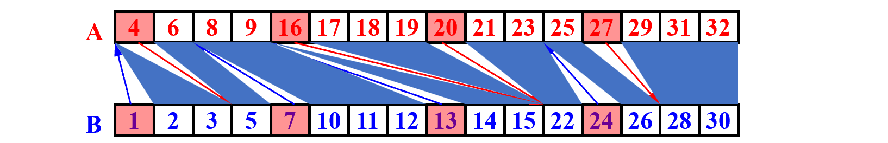
- 总的来说：\(T = O(logn)，W = O(plogn) = O(n)\)
Example: Maximum Finding.
for Pi , 1 <= i <= n pardo
B(i) := 0
for i and j, 1 <= i, j <= n pardo
if ( (A(i) < A(j)) || ((A(i) = A(j)) && (i < j)) )
B(i) = 1
else B(j) = 1
for Pi , 1 <= i <= n pardo
if B(i) == 0
A(i) is a maximum in A
上面的算法 - \(T(n) = O(1),W(n) = O(n^2)\)（B(i) 是并行写入的，只要有一个为 1 就写入 1）
A Doubly-logarithmic Paradigm
方法一：Partition by \(\sqrt{n}\)
- 切割成 \(\sqrt{n}\) 个子问题
- 递归求解
- 最后计算两两打架（T(1) = O(1), W(1) = O(1)）
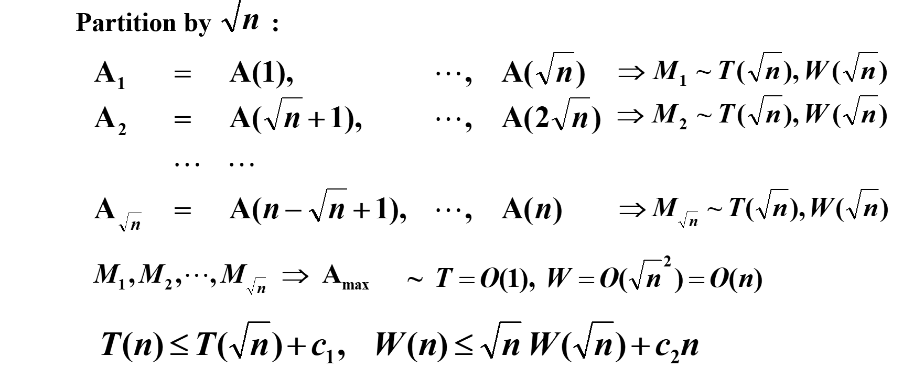
估计递归式 \(T(n) \leq T(\sqrt{n}) + c\) 的上界函数:
- 初始情况下： \(T(n) \leq T(\sqrt{n}) + c\)
- 对 \(T(\sqrt{n})\) 继续递归： \(T(\sqrt{n}) \leq T(n^{1/4}) + c\)
- 对 \(T(n^{1/4})\) 继续递归： \(T(n^{1/4}) \leq T(n^{1/8}) + c\)
- 如此继续下去：
设 \(k\) 是递归的深度（由 \(n\) 减少到 1 需要多少步），使得 \(n^{(1/2)^k} = 1\)。
求解 \(k\)：
即，递归的深度是 \(\log_2 \log n\)。
- 因此，\(T(n) = O(\log \log n)\)
同理，\(W(n)\) 递归的深度也是 \(\log_2 \log n\)。
\(W(n)\leq nW(1) + c_2n\log_2 \log n\)
- \(W(n) = O(n\log \log n)\)
方法二：Partition by h = log log n
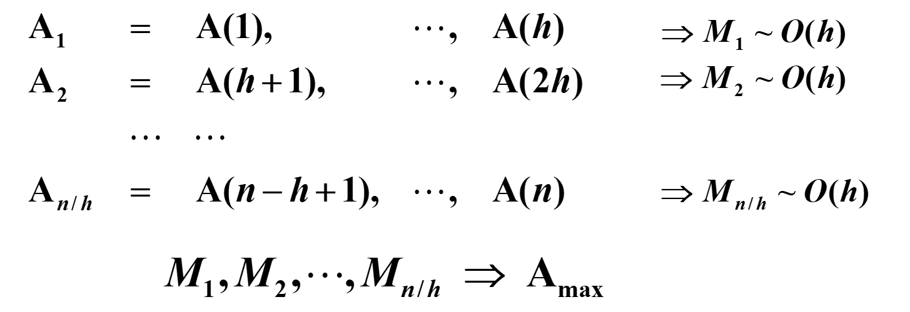
方法三：Random Sampling
- 从 A 中采样 \(n^{\frac{7}{8}}\) 个元素
- 检查外面有没有更大的元素
- 如果有则采样一个包括这个更大的元素的 B
有非常大的可能算法在 \(T(n) =O(1), W(n)=O(n)\) 内结束，超过这个值的可能性大小 = \(O(1/n^c)\)
External Sorting ✔️
Disk 拿到数据时间长，数据量大时需要一个内存外部排序的算法
quick sort 每次拿取时间很长（需要移动磁头、等待旋转等等），效率低
简化问题的假设
- Store data on tapes (can only be accessed sequentially)
- Can use at least 3 tape drives
Example: Suppose that the internal memory can handle M = 3 records at a time.
run - 在排序过程中的一个连续的有序子序列
pass - 将多个有序的 runs 进行合并的过程
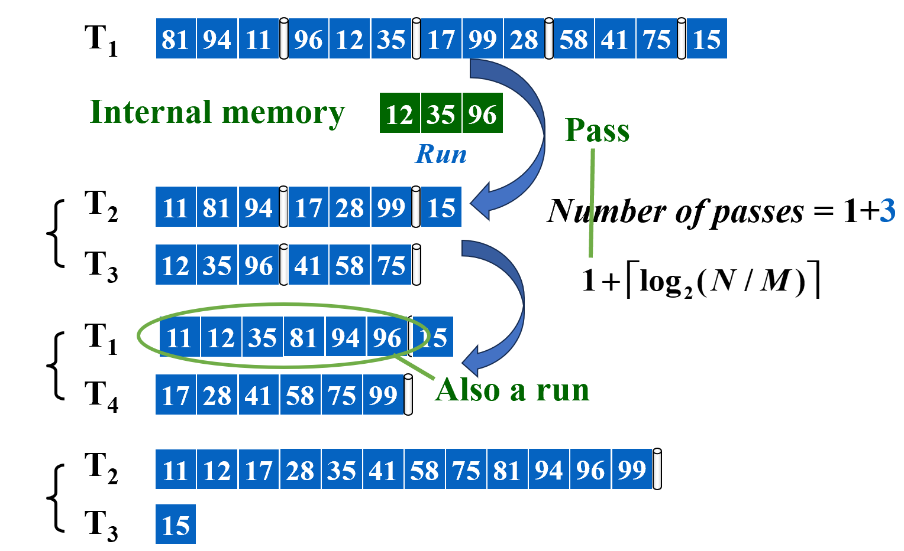
N - 总元素数，M - 内部存储大小
时间消耗：
- Seek time — O( number of passes )
- Time to read or write one block of records
- Time to internally sort M records
- Time to merge N records from input buffers to the output buffer
Computer can carry out I\O and CPU processing in parallel
为减少耗时，reduce pass:
- 多路归并 - 需要 k 个 input tape，k 个 output tape，交换着用
- 减少要用的 tape 数：k 个 input，1 个 output，转换时将 output 的一部分 copy 到之前的 input tape 里
- 前两次 pass：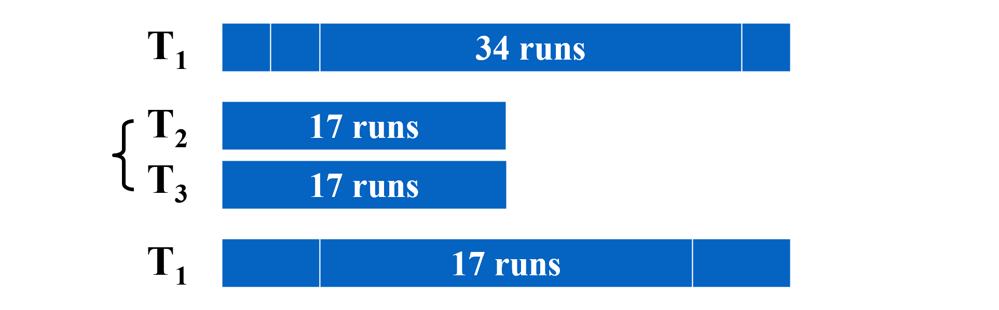
- copy 操作（消耗大）：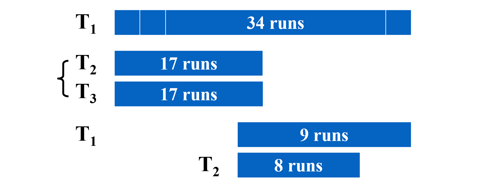
- 全部执行下来 - 1 + 6 passes + 5 copies
- 或者不均分，则不需要 copy，如果是斐波那契数，需要的合并很少
- 将 T1 的 34 个 run 分成下面两个：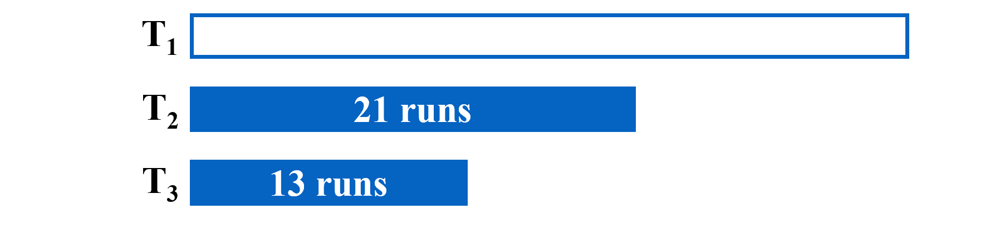
- 将 T2 和 T3 的前 13 个 run 合并到 T1，T2 还剩 8 个 run：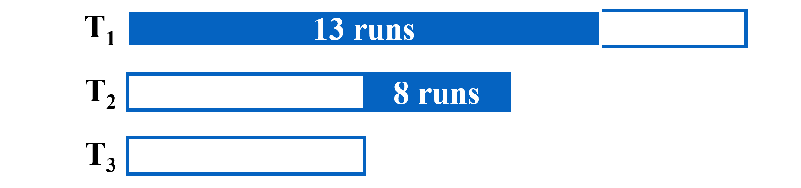
- 以此类推，将 T1 和 T2 的前 8 个 run 合并到 T3：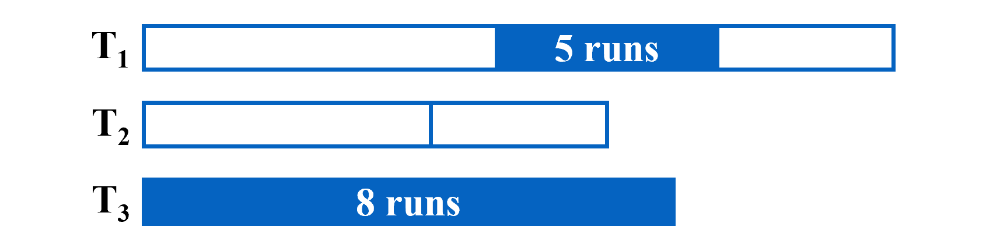
- 图中情况仅需 1 + 7 passes，只需要 k + 1 个 tapes
结论：
- 两路合并的情况，如果是 N/M 是斐波那契数 \(F_N\)，则分成 \(F_{N-1}\) 和 \(F_{N-2}\) 是最佳选择
- k 路合并，定义 k 路斐波那契数 \(F_N^k = F_{N-1}^k + F_{N-2}^k + ... + F_{N-k}^k\), (\(F_N^k = 0,\ 0\leq N\leq k-2\), \(F_{k-1}^k = 1\))
handle buffer
- 如果只有一个 output buffer，在它输出磁盘时，排序会停止
- 用两个 output buffer，其中一个接受 input buffer 的数据，另一个往 disk 写数据
- 因此 k-way 的排序，需要 2k 个 input buffer，2 个 output buffer
在内存固定的情况下，路越多，buffer 越小，即 M 越小，在 pass 数的计算公式中，与 log 的底数相制衡。因此不是路数越多越好。
加大每个 run 的大小 - Replacement selection
- 直接顺序拿取 k 个，按大小排序，选取最小的放在新 tape 里，在空出来的位置拿取新的。
- 拿取新的时可能不能放在新 tape run 的后面 -> 成为死空间
- 当 k 个位置都是死空间 -> 放在下一个 tape，这样平均情况下，每个 run 是之前的两倍
Powerful when input is often nearly sorted for external sorting.
最小 merge 操作：霍夫曼树
用下面的例子说明
Suppose we have 4 runs of length 2, 4, 5, and 15, respectively. How can we arrange the merging to obtain minimum merge times?
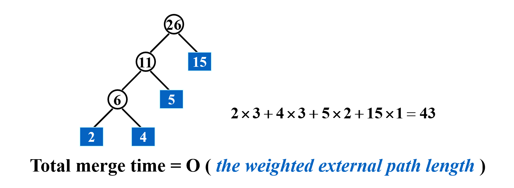